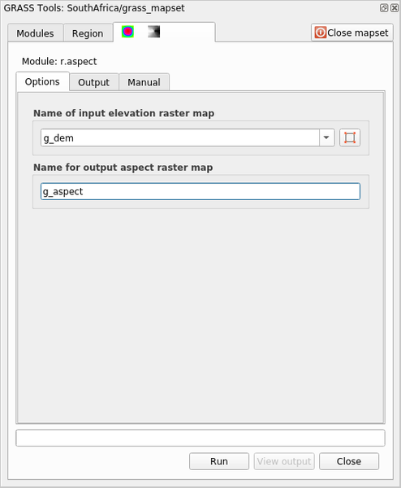

重要
翻訳は あなたが参加できる コミュニティの取り組みです。このページは現在 100.00% 翻訳されています。
12.2. レッスン: GRASSツール
このレッスンでは、あなたにGRASSの機能についてのアイデアを与えるために選り抜きのツールを紹介します。
12.2.1. ★☆☆ （初級レベル） 理解しよう: 傾斜方位地図を作る
GRASSツール タブを開きます
grass_mapset マップセットから
g_demラスタレイヤを読み込みますr.aspect モジュールを モジュールリスト タブの フィルタ フィールドを使って探します
そのツールを開いて次のように設定し、 実行 ボタンをクリックします:
 処理が終了したら 出力を見る をクリックし、結果のレイヤをキャンバスに読み込みます:

g_aspect レイヤは grass_mapset マップセット内に格納されているので、キャンバスからレイヤを削除してもいつでも再読み込みすることができます。
12.2.2. ★☆☆ （初級レベル） 理解しよう: ラスタレイヤの基本的な統計情報を取得する
ラスタレイヤ g_dem の基本的な統計情報をいくつか知りたいと思います。
GRASSツール タブを開きます
grass_mapset マップセットから
g_demラスタレイヤを読み込みますモジュールリスト タブの フィルタ フィールドで r.info モジュールを検索してください
次のようにツールを設定し、実行 をクリックします:

出力タブ内には、ファイルのパス、行数、列数など有用なラスタ情報が出力されているのがわかります。

12.2.3. ★★☆ （中級レベル） 理解しよう: Reclassツール
ラスタレイヤの再分類は非常に価値ある作業です。私たちは g_dem レイヤから g_aspect レイヤを作成したところです。その値域は0（北）から90（東）、180（南）、270（西）を経て、最後に360（再び北）までとなっています。 g_aspect レイヤを再分類して、具体的な 規則*（北 = 1, 東 = 2, 南 = 3, 西 = 4）に従って、4つの **カテゴリー* だけを持つようにすることができます。
Grass 再分類ツールは、定義された規則を含む txt ファイルを受け取ります。規則の書き方は非常に簡単で、GRASS マニュアルに非常に詳しい説明があります。
Tip
GRASSの各ツールには、それぞれ「マニュアル」タブがあります。使用するツールの説明をよく読んで、便利なパラメータを見逃さないようにしましょう。
g_aspectレイヤを読み込むか、作成していない場合は、 ★☆☆ （初級レベル） 理解しよう: 傾斜方位地図を作る セクションに戻りましょう。r.reclass モジュールを モジュール タブの フィルタ フィールドで検索して探します
ツールを開き、次の図のように設定します。規則を含んでいるファイルは
exercise_data/grass/フォルダにreclass_aspect.txtという名前であります。実行 をクリックし、処理が終了するまで待ちます。

出力を見る をクリックすると、再分類されたラスタがキャンバスに読み込まれます
新しいレイヤは、4つの値（1、2、3、4）だけで構成され、管理も加工もしやすくなっています。
Tip
テキストエディタで reclass_aspect.txt を開き、規則を確認し、慣れることから始めてください。さらに、GRASS のマニュアルをよく読んでみてください：多くの異なる例が示されています。
12.2.4. ★★☆ （中級レベル） 自分でやってみよう: 自分の規則で再分類する
g_dem レイヤを3つの新しいカテゴリーに再分類してみる：
0から1000、新しい値 = 1
1000から1400、新しい値 = 2
1400から最大のラスタ値、新しい値 = 3
答え
ラスタの最大値を調べため r.info ツールを実行します：そのコンソールで最大値が1699であることが分かります。これで規則を書く準備ができました。
テキストエディタを開き、次の規則を加えます:
0 thru 1000 = 1 1000 thru 1400 = 2 1400 thru 1699 = 3
そのファイルを
my_rules.txtファイルとして保存し、テキストエディタを閉じます。r.reclassツールを実行します:g_demレイヤを選び、先に保存した規則が入ったファイルを読み込みます。実行、次に 出力を見る をクリックします。色を変えると最終的な結果は次図のようになります:

12.2.5. ★★☆ （中級レベル） 理解しよう: Mapcalcツール
Mapcalc ツールは QGIS の ラスタ計算機に似ています。1つまたは複数のラスタレイヤに対して数学的操作を実行することができ、最終結果は計算された値を持つ新しいレイヤとなります。
次のレッスンの目的は、 g_dem ラスタレイヤから1000以上の値を抽出することです。
モジュール タブの フィルタ フィールドで r.mapcalc モジュールを探してください。
ツールを起動します。
Mapcalc ダイアログでは、ラスタまたはラスタの集合に対して実行する一連の解析を構築することができます。次のためにこれらのツールを使用します：
順番に:
地図を追加：現在のGRASSマップセットからラスタファイルを追加する。
定数値を加算：関数で使う定数値、この例では1000、を追加する
演算子または関数を追加：入力と出力に繋がる演算子または関数、この例では演算子
greater equals than、を追加する接続を追加： 要素を接続する。このツールを使って、あるアイテムの赤い点から別のアイテムの赤い点までクリック＆ドラッグします。接続線に正しく接続されているドットは灰色に変わります。線や点が赤い場合は、正しく接続されていません！
アイテムを選択： アイテムを選択し、選択したアイテムを移動します。
選択したアイテムを削除： 選択されたアイテムを現在の mapcalc シートから削除しますが、マップセットからは削除しません（既存のラスタの場合）
開く：決められた操作で既存のファイルを開きます
保存：すべての操作をファイルに保存します
名前をつけて保存： すべての操作を新しいファイルとしてディスクに保存します。
これらのツールを使って、次のアルゴリズムを組み立てます：

実行 次に 出力を見る をクリックすると、出力がマップに表示されます：

これは地形が1000メートルより高い区域をすべて示しています。
Tip
GRASS Mapcalc ツールバーの最後のボタンをクリックすると、作成した数式を保存し、別の QGIS プロジェクトで読み込むこともできます。
12.2.6. 結論
このレッスンでは、GRASSが提供する数多くのツールのほんの一部を紹介しました。自分でGRASSの機能を調べるには GRASSツール ダイアログを開き、 モジュールリスト をスクロールしてください。あるいは、より構造的なアプローチとして、ツールの種類ごとに整理されている モジュールツリー タブの下を見てください。